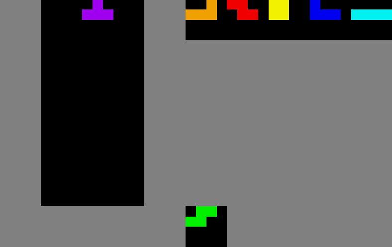

Wrappers¶
Wrappers are used to extend or alter the functionality of an environment. You can easily define your own observation wrappers by following the Gymnasium documentation for wrappers. Alternatively, you can use predefined wrappers from Tetris Gymnasium or Gymnasium.
Grouped actions¶
The grouped actions wrapper is a special wrapper that changes both the action space and the observation space of the environment. Instead of offering actions such as moving the Tetromino by one position, the grouped actions wrapper offers actions that place the Tetromino in a specific position.

This image is used for demonstration purpose only. The real observation is an array as described in the Observation Space section, which can be interpreted as a flattened (1D) version of this image.
- class tetris_gymnasium.wrappers.grouped.GroupedActionsObservations(env: Tetris, observation_wrappers: list[ObservationWrapper] | None = None, terminate_on_illegal_action: bool = True)[source]¶
Wrapper that changes the observation and actions space into grouped actions.
This wrapper introduces action-grouping as commonly used in current Tetris RL approaches. An example of this idea can be found in “Playing Tetris with Deep Reinforcement Learning (Stevens & Pradhan).”
- Action space
For each column on the board, the agent can choose between four different rotations. This results in a total of width * 4 possible actions. Therefore, the action space is a Discrete space with width * 4 possible actions. The value is interpreted as column index and number of rotations in ascending order. So the actions [0, 1, 2, 3] correspond to the first column and the tetromino rotated 0, 1, 2, 3 times respectively. The actions [4, 5, 6, 7] correspond to the second column and the tetromino rotated 0, 1, 2, 3 times respectively, and so on.
- Observation space
For each possible action, the wrapper generates a new observation. This means, that an additional dimension of size width * 4 is added to the observation space. Observation wrappers have to be passed to the constructor to apply them to the generated observations instead of wrapping them around the GroupedActions wrapper.
- Legal actions
Because the action space is static but the game state is dynamic, some actions might be illegal. For this reason, the wrapper generates a mask that indicates which actions are legal. This mask is stored in the legal_actions_mask attribute. If an illegal action is taken, the wrapper can either terminate the episode or return a penalty reward. The action mask is returned in the info dictionary under the key action_mask. Note that only actions which would result in a collision with the frame are considered illegal. Actions which would result in a game over (stack too high) are not considered illegal.
- Parameters:
env – The environment to wrap.
observation_wrappers – The observation wrappers to apply to the individual observation.
terminate_on_illegal_action – Whether to terminate the episode if an illegal action is taken.
Observation wrappers¶
Observation wrappers are used to alter the observation space of the environment. This can be useful for changing the shape of the observation space or for adding additional information to the observation space.
RGB¶

- class tetris_gymnasium.wrappers.observation.RgbObservation(env: Tetris)[source]¶
Observation wrapper that displays all observations (board, holder, queue) as one single RGB Image.
The observation contains the board on the left, the queue on the top right and the holder on the bottom right. The size of the matrix depends on how many tetrominoes can be stored in the queue / holder.
- Parameters:
env (Tetris) – The environment
Feature vectors¶
- class tetris_gymnasium.wrappers.observation.FeatureVectorObservation(env: Tetris, report_height=True, report_max_height=True, report_holes=True, report_bumpiness=True)[source]¶
Observation wrapper that returns a feature vector as observation.
- State representation
A feature vector can contain different features of the board, such as the height of the stack or the number of holes. In the literature, this is often referred to as a state representation and many different features can be used. A discussion about the state representation can be found in “Reinforcement learning (RL) is a paradigm within machine learning that has been applied to Tetris, demonstrating the effect of state representation on performance (Hendriks).”
- Features
For this wrapper, the features from https://github.com/uvipen/Tetris-deep-Q-learning-pytorch have been adapted. These features are:
The height of the stack in each column (list: int for each column)
The maximum height of the stack (int)
The number of holes in the stack (int)
The bumpiness of the stack (int)
More features can be added in the future or by introducing new wrappers.
- Parameters:
env (Tetris) – The environment.
report_height (bool, optional) – Report the height of the stack in each column. Defaults to True.
report_max_height (bool, optional) – Report the maximum height of the stack. Defaults to True.
report_holes (bool, optional) – Report the number of holes in the stack. Defaults to True.
report_bumpiness (bool, optional) – Report the bumpiness of the stack. Defaults to True.
Action wrappers¶
Action wrappers are used to alter the observation space of the environment. At this stage, no action wrappers are implemented in Tetris Gymnasium.